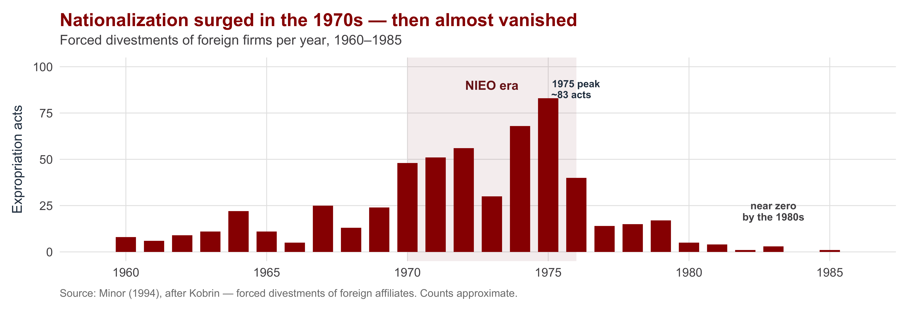
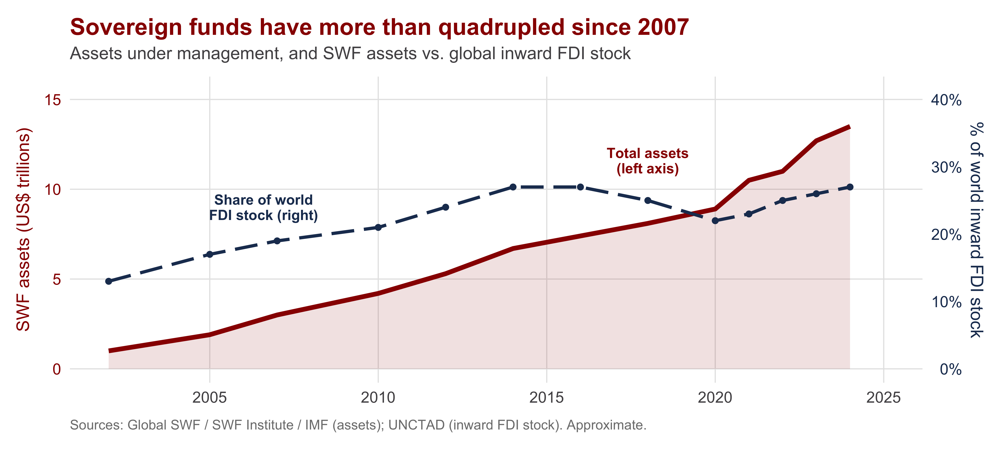
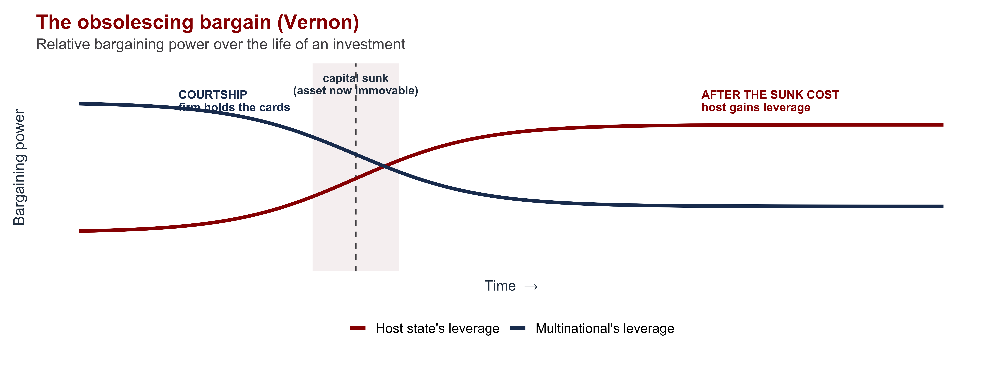
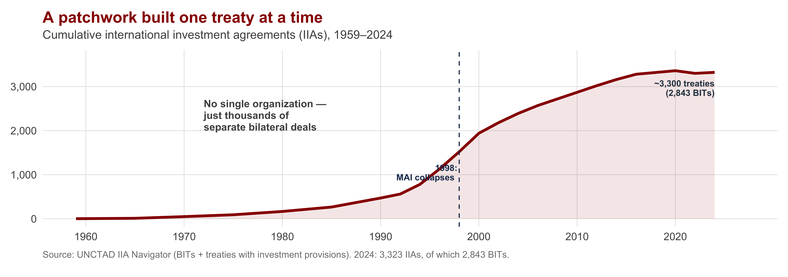

| Section | What we'll cover |
|---|---|
| 1 · One Firm, Many Sovereigns | Why the firm and the state answer to different masters |
| 2 · Group Work: How States and Firms Negotiate Control | Four groups each build one slide answering a core question from the chapter, then report back |
| 3 · The Securitization of Investment | Screening, CFIUS, and today's reading and podcast |
The Politics of Multinational Corporations
INTL 503 | Chapter 9 — Group-Work Format
Professor Sarah Bauerle Danzman
July 17, 2026
Today’s Plan
Today’s Big Question
A multinational answers to many governments but to no global authority — so who actually controls it?
One Firm, Many Sovereigns
Chile, 1971: Who Owns the Copper?
Chile’s economy ran on copper — and the biggest mines were owned by two U.S. multinationals, Anaconda and Kennecott.
- In 1971, President Salvador Allende nationalized the mines — a unanimous vote of the Chilean Congress
- Compensation was slashed for “excess profits”; the firms fought back, lobbied Washington, froze Chilean assets abroad
- The MNC had become a flashpoint of sovereignty, foreign policy, and Cold War politics
A foreign firm owned a strategic national resource on Chilean soil. Whose rules apply — Chile’s, the home country’s, or the firm’s own global calculation?
That collision is at the heart of the politics of the multinational corporation.
Salvador Allende, President of Chile (1970–1973)
Chapter 8 examined why firms invest abroad. Chapter 9 turns to what happens once they do — when a profit-seeking global firm operates inside a sovereign state with goals of its own.
The Core Tension: State and Firm
| The State | The Multinational | |
|---|---|---|
| Frame of reference | Territorial — one national jurisdiction | Global — the worldwide operation |
| Objective | Maximize national welfare (jobs, revenue, security) | Maximize firm/shareholder welfare across all markets |
| Loyalty | To citizens who can vote and demand | To shareholders, not to any one host |
| Time horizon | Bound to the nation, indefinitely | Mobile — can exit, relocate, restructure |
Vernon’s insight: “the people in any national jurisdiction have a right to maximize their well-being… The MNC, on the other hand, is bent on maximizing the well-being of its stakeholders from global operations, without accepting responsibility for the consequences in individual jurisdictions.” (Vernon 1998)
The host’s dilemma: it needs MNCs to capture FDI’s benefits, yet cannot trust them to deliver those benefits on their own. Almost all the politics of MNCs is governments managing this dilemma.
Group Work: How States and Firms Negotiate Control
Group Work Instructions
The exercise
Break into four groups. Each group gets 10 minutes to read its assigned pages and build one slide that teaches its question as clearly and succinctly as possible, then 5 minutes to report back to the class. Groups can raise their own questions, or ask clarifying questions, as part of the report-back.
| Question | Reading (Oatley Ch. 9) | |
|---|---|---|
| Group 1 | How did developing countries try to control multinationals — and why did the 1960s–70s nationalization wave collapse? | pp. 189–192 |
| Group 2 | How do advanced industrialized countries regulate multinationals, and why are sovereign wealth funds politically controversial? | pp. 192–196 |
| Group 3 | Why does bargaining power shift between a firm and a host government over the life of an investment — and why do governments compete with locational incentives? | pp. 196–201 |
| Group 4 | Why is there no "World Investment Organization" — and what did the world build instead? | pp. 202–209 |
Reference: The Host Country’s Toolkit
A performance requirement is a condition a host government attaches to FDI to make the firm’s behavior serve national objectives — not just the firm’s bottom line.
| Tool | What it forces the firm to do |
|---|---|
| Local-content rules | A set share of inputs must be sourced domestically — building local suppliers |
| Export requirements | The firm must export a set share of output — earning foreign exchange |
| Technology transfer | The firm must license or share technology with local partners |
| Joint-venture / equity caps | Foreign ownership is capped; a local partner must hold equity (control stays partly home) |
| Employment & training | Mandated hiring, training, or management localization of host-country nationals |
Reference: Nationalization and Export-Processing Zones

Export-processing zones (EPZs) — carved-out enclaves offering duty-free imports, tax breaks, streamlined rules, and (often) lighter labor regulation, in exchange for export-oriented jobs. Taiwan and South Korea used EPZs from the 1960s–70s to attract investment even while regulating it closely elsewhere; from a handful of zones in the 1970s to thousands worldwide today.
Reference: Sovereign Wealth Funds
A sovereign wealth fund (SWF) is a state-owned investment fund that invests national savings — often oil revenue or reserves — in assets abroad.

Reference: The Obsolescing Bargain

Reference: Locational Incentives
Inducements a host offers to win an investment: tax holidays, subsidies, cash grants, cheap land, infrastructure, regulatory relief.
Example — the U.S. South: in 1990 the Deep South built no cars; today Alabama, Georgia, Mississippi, and South Carolina build 2M+/year, lured by competing state incentive packages. BMW’s Spartanburg, SC plant (1992) started it — roughly $135M in incentives, about $67,500 per job. Alabama’s Mercedes package (mid-1990s) ran $253–300M, roughly $200,000–250,000 per job.
Reference: Asserting Sovereignty — The Right to Nationalize
When performance requirements weren’t enough, developing host countries asserted a more radical claim in the 1960s–70s: the sovereign right to nationalize foreign firms.
The Calvo Doctrine
A foreign investor is entitled to no more than national treatment, and disputes must be settled in the host’s own courts under host law — not through the investor’s home government or international arbitration. Sovereignty, not special protection.
Permanent Sovereignty over Natural Resources
UN General Assembly Resolution 1803 (1962) affirmed every state’s right to control — and expropriate — foreign-owned resources in the national interest, with compensation set by the host. The economic charter of the NIEO.
Reference: Trade Has the WTO; Investment Has 3,300 Treaties

Reference: TRIMs and the MAI
Governments spent decades trying to build multilateral investment rules, with limited success.
TRIMs — a partial measure
The WTO’s Trade-Related Investment Measures agreement (1995) bans only the trade-distorting performance requirements — chiefly local-content and trade-balancing rules. It disciplines a few host tools but creates no general investment regime.
MAI — the comprehensive attempt
The Multilateral Agreement on Investment, negotiated at the OECD (1995–1998), aimed to be a comprehensive investment treaty — strong investor protections, binding ISDS. It collapsed in 1998 amid NGO and public opposition over sovereignty, and disagreement among the negotiating governments themselves.
Earlier attempts also failed: the 1948 Havana Charter (ITO) and the 1970s UN Code of Conduct on TNCs. Across three venues — UN, GATT/WTO, OECD — and nearly 30 years of talks, no comprehensive framework emerged.
Reference: Why No WTO for Investment? Home vs. Host
| Home countries | Host countries | |
|---|---|---|
| Who they are | Capital-EXPORTERS — advanced, home to MNCs | Capital-IMPORTERS — developing, host to MNCs |
| What they want rules to do | PROTECT investors; lock in access; restrain host interference | PRESERVE sovereignty; keep the right to regulate & screen |
| Their model doctrine | Strong investor rights + ISDS (anti-Calvo) | Calvo Doctrine + permanent sovereignty |
| Whom rules should bind | Discipline HOST STATES | Discipline the FIRMS |
The Securitization of Investment
Emerging issue
From Attracting FDI to Screening It

The pattern reverses. For four decades, states competed to attract FDI; now advanced economies screen and sometimes block it on national-security grounds. In the U.S., CFIUS — strengthened by FIRRMA (2018) — reviews foreign deals; 342 filings in 2023 alone. “Economic security is national security.”
🎧 Podcast: Skadden, Economic Statecraft & Foreign Investment Screening — the screening “toolkit” in practice.
Recap: Who Governs the Multinational?
Today’s Big Question — A multinational answers to many governments but to no global authority — so who actually controls it?
From control to competition
- One firm, many sovereigns: Vernon’s tension — global firm vs. territorial state
- Group 1: hosts push back — performance requirements, nationalization, then EPZs to attract investment
- Group 2: advanced economies regulate too — sector restrictions, sovereign wealth funds
- Group 3: the obsolescing bargain explains the swing — power shifts once capital is sunk, and firms compete for it via locational incentives
Governance, or its absence
- Group 4: no World Investment Organization — the Calvo Doctrine, TRIMs, the MAI’s collapse — home and host want opposite rules
- So: 3,300 BITs + ISDS, not one body
- Now: screening & CFIUS rebuild host control as national security (securitized political economy)
The throughline: the multinational has long operated in the gap between a global economy and a world of sovereign states. No international organization filled that gap, and today the security state is moving into it.

INTL 503 | The Politics of Multinational Corporations